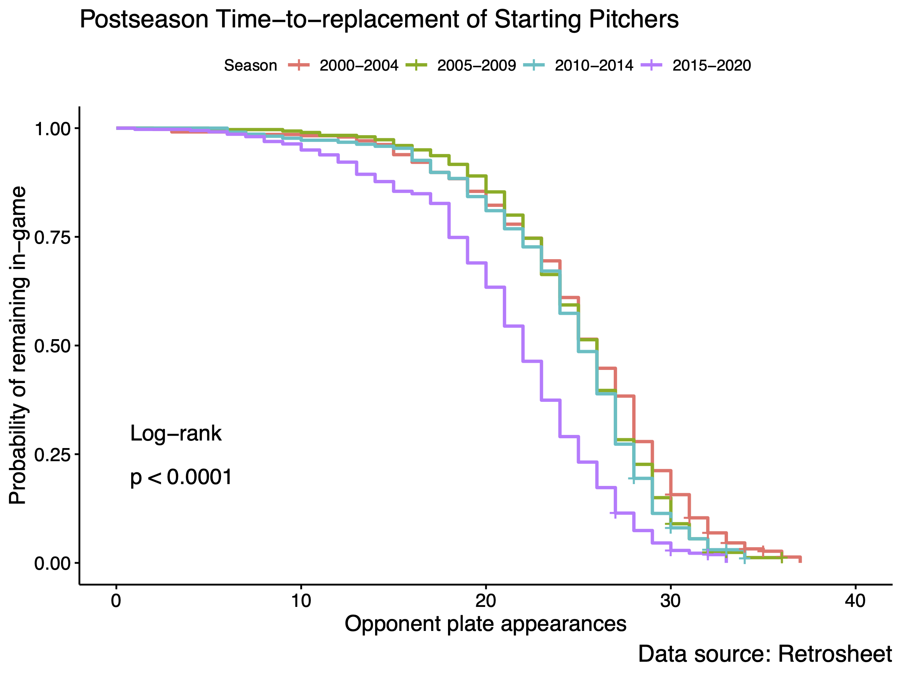

Ray Pomponio
Current Work: SABR Analytics 2024
The following work is ongoing, part of a target presentation for the 2024 SABR Analytics Conference in Arizona.
Executive Summary
In postseason play, the decision of when to replace a starting pitcher is one of the most crucial faced by managers. Previous analysis (Woodham et al., 2019) has shown that certain in-game factors predict the probability of a pitcher’s replacement following an opponent plate appearance; namely, the strike count, pitch count, number of outs, number of batters, and number of home runs conceded were all ranked high in importance for predicting replacement. Of those factors, all but the number of home runs conceded are associated with time on the mound. The longer a starting pitcher throws into a game, the more likely he is to be replaced. Therefore, an approach that models the cumulative effect of time is well-suited to analyzing pitcher replacements. Using 20 years of postseason data (2000-2019), I modeled the time-to-replacement of starting pitchers with Cox Proportional Hazards (PH) regression (acknowledgement to Retrosheet). While pulling a starting pitcher is a complex decision requiring managerial nuance, there are apparent factors that influence the timing of pitcher replacements in the postseason. For example, managers in the 2015-2019 seasons were 2.54 times more likely to replace their starters against any given batter, versus the 2000-2005 era (Hazard Ratio: 2.536, p-value: <0.001). Similarly, for each additional runner on base, managers were XX.X times more likely to replace their starter. Across all models using the PH framework, I controlled for pitches thrown (avg. pitches per plate appearance), designated hitter usage, and pitcher handedness. Whereas a starting pitcher in 2000-2005 would have had a XX.X% chance of pitching three times through the order (TTO), a starter in 2015-19 would have had only a XX.X% chance of pitching the same duration, controlling for volume, DH usage, and handedness. This work informs the conversation around managerial decision-making in the postseason. Several macro-trends are apparent in the preliminary results of this analysis that warrant further study, such as the modern tendency to replace starters earlier in the game. Lastly, this work begins an inquiry into the causal effects of pitcher replacements. I aim to quantify the typical impact of pulling a starter versus leaving him in, a question that is made difficult by the lack of experimental data on the topic.
Time-to-replacement in Postseason
Preliminary evidence suggests a trend towards earlier replacement of the starting pitcher in postseason games.

This is a Quarto website.